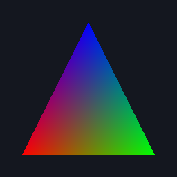
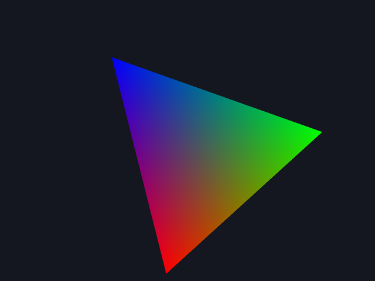

Módulo 4 · La GPU por dentro
OpenGL real desde Python (moderngl y PyOpenGL)
La misma escena de la GPU de juguete, dibujada ahora por la GPU de verdad desde Python: primero con moderngl, una capa cómoda y sin ventana; después con PyOpenGL, llamada a llamada, junto a su equivalente exacto en WebGL. Con todas las particularidades de OpenGL en macOS.
Al terminar esta lección
- Prepararás un entorno de Python con moderngl, PyOpenGL y glfw, y sabrás qué hacer si
piptiene que compilar algo. - Dibujarás sin ventana con moderngl y guardarás el resultado como PNG, entendiendo qué llamada de OpenGL hay detrás de cada método.
- Escribirás el mismo programa con llamadas crudas de OpenGL y lo relacionarás, línea a línea, con WebGL.
- Conocerás las particularidades de OpenGL en macOS: perfil core, contexto forward-compatible, versiones de GLSL, VAO obligatorio y pantallas Retina.
- Abrirás una ventana interactiva con glfw y reconocerás en su bucle el
requestAnimationFramedel navegador.
¿Por qué OpenGL desde Python?
WebGL es OpenGL ES 3.0 dentro de un navegador, con ANGLE en medio (4.1). Fuera del navegador, la misma GPU se programa con OpenGL de escritorio, y desde Python tenemos dos maneras de hacerlo:
- moderngl: una capa fina y cómoda sobre OpenGL 3.3+. Objetos de Python (
ctx.buffer,ctx.program,ctx.vertex_array) que por dentro hacen las llamadas de siempre. Puede crear un contexto sin ventana, ideal para renderizar imágenes desde un script. - PyOpenGL: la API de OpenGL tal cual, función por función (
glGenBuffers,glBindBuffer…). Necesita que alguien cree el contexto: usaremos glfw, una biblioteca de ventanas.
Tener la GPU real a mano desde Python sirve para más cosas de las que parece: renderizar imágenes o vídeos sin navegador, probar shaders en scripts automáticos… y comprobar que lo que aprendiste con la GPU de juguete es verdad. Todas las imágenes de «GPU real» de este módulo salieron de estos scripts.
Preparar el entorno
El código está en la carpeta python/ del curso, con su propio README.md y un requirements.txt con las versiones exactas que probamos. Desde esa carpeta:
Los paquetes: moderngl (y su dependencia glcontext, que crea el contexto), PyOpenGL, glfw (que trae la biblioteca GLFW 3.4 compilada), numpy (PyOpenGL lo usa para devolver arrays) y pillow (para leer y guardar PNG).
Probamos todo con Python 3.14.7 de Homebrew. moderngl 5.12.0 y glcontext 3.0.0 no publican paquetes precompilados (wheels) para Python 3.14 en macOS, así que pip los compila al instalarlos (tarda unos 5 segundos). Para eso necesitas las herramientas de línea de comandos de Xcode (xcode-select --install). Si no puedes compilar, usa un Python para el que sí haya paquetes, por ejemplo brew install python@3.13 y python3.13 -m venv .venv. La GPU de juguete, en cambio, no necesita nada: funciona con cualquier Python desde el 3.9 (la probamos también con el 3.9 de Apple).
Para comprobar que todo funciona, python probar_todo.py ejecuta los 27 scripts del curso (la GPU de juguete, moderngl y PyOpenGL) y verifica que cada uno genera sus imágenes.
moderngl: el triángulo, sin ventana
Este es python/moderngl/01_triangulo.py: la escena de la GPU de juguete (los mismos 60 bytes), dibujada por la GPU real. Cada comentario dice qué llamadas de OpenGL hay detrás:
- Un contexto standalone: sin ventana ni pantalla. En macOS,
glcontextcrea un contexto CGL con perfil core 4.1.ctx.infoes un diccionario con lo que responde el driver: aquí,Apple M1y4.1 Metal - 90.5(el OpenGL de Apple también está implementado sobre Metal). - El programa: dos shaders en GLSL de escritorio.
#version 330 corees la versión de OpenGL 3.3; en macOS valen330 corey410 core, pero no el300 esde WebGL2 (lo comprobamos).ctx.programcompila los dos, los enlaza y, si algo falla, lanza una excepción con el registro del compilador. No hayprecision: en GLSL de escritorio se admite (lo probamos) pero no tiene efecto; los floats son siempre de 32 bits. - Los mismos 60 bytes de siempre y
ctx.buffer(datos), que equivale aglGenBuffers+glBindBuffer+glBufferData. Condynamic=Trueusaría el hintGL_DYNAMIC_DRAWen lugar deGL_STATIC_DRAW(lo comprobamos conglGetBufferParameteriv). - El VAO. La cadena
"2f 3f"describe el vértice: 2 floats y luego 3 floats. moderngl calcula el stride (20) y los offsets (0 y 8), busca la location dea_posya_coloren el programa enlazado y hace losglVertexAttribPointer.vao.verticeses cuántos vértices caben en el buffer (3): lo que dibujarárender()si no le dices otra cosa. - Como no hay ventana, no hay framebuffer por defecto: creamos uno.
simple_framebufferreserva un renderbuffer de color RGBA8 y otro de profundidad.use()lo enlaza y ajusta el viewport a su tamaño;clear()esglClearColor+glClear. - La orden de dibujo:
glUseProgram+glBindVertexArray+glDrawArrays(GL_TRIANGLES, 0, 3). fbo.read(components=4)esglReadPixelscon RGBA y bytes sin signo (moderngl fija la alineación de las filas a 1 byte). Las filas llegan de abajo arriba (en GL la fila 0 es la inferior), así que Pillow le da la vuelta antes de guardar (4.3).

GPU de juguete (Python puro) GPU real con PyOpenGL
GPU real con PyOpenGL(81, 83, 91, 255) en las tres.El formato de moderngl, traducido
La cadena de formato es la parte de moderngl que más esconde. La comprobamos preguntando al driver, con PyOpenGL sobre el mismo contexto, qué había configurado moderngl para cada atributo (moderngl/02_buffers_y_vao.py y moderngl/soluciones/ej4_formatos.py):
| En la cadena | Tipo en el buffer | Con el shader | moderngl llama a |
|---|---|---|---|
3f | 3 × FLOAT | in vec3 | glVertexAttribPointer(loc, 3, GL_FLOAT, GL_FALSE, …) |
4f1 | 4 × UNSIGNED_BYTE | in vec4 (recibe de 0 a 1) | glVertexAttribPointer(loc, 4, GL_UNSIGNED_BYTE, GL_TRUE, …) |
2f2 | 2 × HALF_FLOAT | in vec2 | glVertexAttribPointer(loc, 2, GL_HALF_FLOAT, GL_FALSE, …) |
4u1 | 4 × UNSIGNED_BYTE | in uvec4 (enteros) | glVertexAttribIPointer(loc, 4, GL_UNSIGNED_BYTE, …) |
4i2 | 4 × SHORT | in ivec4 (enteros) | glVertexAttribIPointer(loc, 4, GL_SHORT, …) |
4x | 4 bytes de relleno | — | solo suma 4 al stride y a los offsets siguientes |
Con esta tabla, el formato compacto que diseñaste a mano en 4.4 (posición en floats, color en bytes normalizados, coordenadas de textura en half float y un identificador entero) cabe en una sola cadena; en el ejercicio 4.6.4 calcularás las llamadas exactas que genera.
Al preguntar al driver descubrimos un detalle importante: la letra decide el tipo de los bytes, pero la función la elige el shader. Con 4u1 y un shader que declara in uvec4, moderngl llama a glVertexAttribIPointer; con el mismo 4u1 y un in vec4, llama a glVertexAttribPointer sin normalizar, y un byte 255 llega como 255,0. Lo mismo con 4f1: normalizado si el shader pide vec4, entero crudo si pide ivec4 o uvec4. En WebGL esa coincidencia la tienes que garantizar tú, o el dibujo falla (4.4).
Dos detalles más que ya conoces con otro nombre: si un atributo que nombras no es activo (el shader no lo usa), ctx.vertex_array lanza KeyError; y programa["u_x"] lanza KeyError si el uniform no existe o el compilador lo eliminó (4.5). moderngl convierte en excepciones los silencios de OpenGL.
moderngl y PyOpenGL pueden trabajar sobre el mismo contexto: PyOpenGL actúa sobre el contexto actual, y el standalone de moderngl lo es desde que lo creas. Cada objeto de moderngl expone su nombre de OpenGL en .glo, así que puedes preguntarle al driver qué hizo moderngl de verdad:
Es la técnica de moderngl/soluciones/ej4_formatos.py, y así descubrimos que la función la elige el shader. Es un truco de depuración, no de producción: cada llamada de PyOpenGL cambia estado a espaldas de moderngl, así que deja todo como lo encontraste.
Un VAO de moderngl se crea con el formato "2f 4f1" para a_pos (in vec2) y a_color (in vec4). ¿Qué stride pasa moderngl a glVertexAttribPointer?
- 24 bytes.Contaste
4f1como cuatro floats (16 bytes). El número tras la letra es el tamaño de cada componente: cuatro componentes de 1 byte son 4 bytes. - 12 bytes.Dos floats (8 bytes) más cuatro bytes normalizados (4 bytes): 12 bytes por vértice. Los offsets serán 0 y 8, y el color llegará al shader de 0 a 1.
- 6.Eso es el número de componentes (2 + 4). El stride se mide siempre en bytes, en WebGL y en OpenGL.
PyOpenGL: las llamadas crudas, una a una
Ahora sin red: python/pyopengl/01_triangulo_crudo.py hace lo mismo con la API de OpenGL tal cual. Lo verás en cuatro trozos. Cada línea lleva al lado, en un comentario, su equivalente en WebGL: son casi siempre la misma llamada con otro nombre.
1. El contexto
- Inicializa glfw. En el navegador, este papel (hablar con el sistema de ventanas y crear el contexto) lo hace
canvas.getContext('webgl2'). - La ventana existirá pero no se verá: solo la queremos para tener un contexto.
- Las hints del contexto: OpenGL 4.1 (el máximo de macOS), perfil core (sin las funciones antiguas) y forward-compatible. Son imprescindibles en macOS: sin ellas obtienes un contexto 2.1 (lo desmontamos más abajo).
- Crear la ventana es lo que crea el contexto. Si las hints piden algo imposible, devuelve
None. - Hace el contexto actual en este hilo. Las funciones
GL.*de PyOpenGL no reciben el contexto como argumento (no hay un objetogl): actúan sobre el contexto actual. Es la máquina de estados, un nivel más arriba. glGetStringdevuelvebytes, que hay que decodificar. En nuestro Mac imprimeOpenGL 4.1 Metal - 90.5 | Apple M1.
2. Shaders y programa
- La función de compilar de siempre (en WebGL la escribirás en 5.2): crear el shader, darle el código fuente, compilarlo y comprobar el estado.
glGetShaderivesgetShaderParameter: en OpenGL, las consultas que devuelven enteros llevan la terminacióniv(integer vector). El registro llega comobytes: hay que decodificarlo. - Los shaders fijan las locations con
layout(location = N), así no hay que preguntar al enlazador dónde puso cada atributo (en 4.4 viste que moderngl, sinlayout, obtuvo las locations que eligió el enlazador). - Compilar los dos shaders y crear, adjuntar, enlazar y comprobar el programa:
glGetProgramiv(p, GL_LINK_STATUS)esgetProgramParameter(p, gl.LINK_STATUS). - Tras enlazar, el programa contiene el código compilado: los objetos shader sobran.
glDeleteShaderlos marca para borrar (se liberan cuando se separen del programa).
3. VAO, VBO, framebuffer y dibujo
- Los mismos 60 bytes, con
struct.pack. - El VAO, primero: en perfil core no hay VAO por defecto, y todo lo que sigue se grabará en este.
glGenBuffers(1)devuelve un nombre (un entero: en OpenGL de escritorio los objetos son números, no objetos JavaScript).glBufferDatarecibe el tamaño en bytes explícitamente; en WebGL lo deduce delTypedArray.- Los dos atributos, con los mismos argumentos que en WebGL. La diferencia: el offset se pasa como un «puntero» (
ctypes.c_void_p(8)), herencia de cuando OpenGL podía leer los vértices directamente de la memoria de la CPU. WebGL eliminó esa posibilidad y el offset es un número normal. Aquí, un8a secas no funcionaría: lo verás en el ejemplo 4.6.2. - Un framebuffer propio con un renderbuffer RGBA8 (no dibujamos en la ventana oculta; así además no dependemos de la pantalla Retina).
glCheckFramebufferStatusconfirma que está completo (5.8). - Viewport, borrado, programa, VAO y
glDrawArrays: idéntico a WebGL.glGetError()devuelve 0 (GL_NO_ERROR).
4. Leer los píxeles
- Las filas de la lectura se alinean a 1 byte (enseguida verás por qué importa).
glReadPixels: el mismogl.readPixelsde WebGL. PyOpenGL devuelve los bytes directamente (en WebGL pasas tú elUint8Arrayde destino).- Invertir el orden de las filas: la fila 0 de GL es la de abajo; la del PNG, la de arriba.
- El píxel de control, leído de los datos originales (fila 100 contando desde abajo, columna 128, 4 bytes por píxel):
(81, 83, 91, 255). - Y guardamos con el codificador PNG de la GPU de juguete (
png_propio.py): los mismos bytes, el mismo archivo.
La tabla de traducción
Con los dos scripts delante, la correspondencia es casi mecánica:
| WebGL2 (JavaScript) | OpenGL (PyOpenGL) | moderngl |
|---|---|---|
canvas.getContext('webgl2') | glfw.create_window + make_context_current | moderngl.create_standalone_context() |
gl.createShader / shaderSource / compileShader | glCreateShader / glShaderSource / glCompileShader | ctx.program(vertex_shader=…, fragment_shader=…) |
gl.createProgram / attachShader / linkProgram | glCreateProgram / glAttachShader / glLinkProgram | |
gl.getShaderParameter(s, gl.COMPILE_STATUS) | glGetShaderiv(s, GL_COMPILE_STATUS) | (lanza moderngl.Error) |
gl.createBuffer + bindBuffer + bufferData | glGenBuffers + glBindBuffer + glBufferData | ctx.buffer(bytes) |
gl.createVertexArray + bindVertexArray | glGenVertexArrays + glBindVertexArray | ctx.vertex_array(prog, [(vbo, "2f 3f", "a_pos", "a_color")]) |
gl.enableVertexAttribArray + vertexAttribPointer(l, 2, gl.FLOAT, false, 20, 8) | glEnableVertexAttribArray + glVertexAttribPointer(l, 2, GL_FLOAT, GL_FALSE, 20, c_void_p(8)) | |
gl.getUniformLocation + gl.uniform1f | glGetUniformLocation (−1 si no existe) + glUniform1f | prog["u_x"].value = 1.0 |
| (el canvas ya tiene framebuffer) | glGenFramebuffers + glGenRenderbuffers + … | ctx.simple_framebuffer((w, h)) |
gl.viewport + clearColor + clear | glViewport + glClearColor + glClear | fbo.use() + fbo.clear(r, g, b, a) |
gl.useProgram + bindVertexArray + drawArrays | glUseProgram + glBindVertexArray + glDrawArrays | vao.render(moderngl.TRIANGLES) |
gl.readPixels(0, 0, w, h, gl.RGBA, gl.UNSIGNED_BYTE, destino) | glReadPixels(0, 0, w, h, GL_RGBA, GL_UNSIGNED_BYTE) | fbo.read(components=4) |
Ejemplo 4.6.1 — El mismo triángulo en WebGL, llamada por llamada
Vamos a traducir 01_triangulo_crudo.py a WebGL2 aplicando la tabla fila a fila, y a comprobar que la GPU del navegador produce el mismo píxel. Cada línea lleva su equivalente de Python en un comentario. Lo desmontarás con calma en 5.2; por ahora, compara y fíjate en el píxel que lee al final:
Paso a paso, lo que cambió en la traducción:
- El contexto sale del canvas: no hay hints ni ventana. Pedimos
antialias: falseporque con antialiasing (el valor por defecto) los píxeles de los bordes se mezclarían con el fondo y la imagen ya no sería idéntica a la de Python. - Los shaders dicen
#version 300 esen lugar de330 core, y el fragment shader necesitaprecision highp float(en GLSL ES es obligatorio; en el de escritorio no tiene efecto).layout(location = N)funciona igual en los dos. - Los objetos son objetos de JavaScript (
WebGLBuffer…), no enteros, ybufferDatasaca el tamaño delFloat32Array. - El offset de
vertexAttribPointeres un número normal (8), sinc_void_p. - No hay framebuffer propio: dibujamos en el del canvas, y
readPixelsescribe en unUint8Arrayque le pasamos nosotros.
En nuestro Mac, el navegador lee (81, 83, 91, 255): el mismo valor, byte a byte, que los tres caminos de Python. Cuatro programas distintos, en dos lenguajes, a través de dos pilas de software distintas (ANGLE → Metal y el OpenGL de Apple → Metal), y una GPU de juguete que no toca la GPU: el mismo píxel. No es casualidad: las reglas de rasterización y de interpolación que implementaste en 4.3 son las de la especificación, y todas las implementaciones las cumplen.
Ejemplo 4.6.2 — El triángulo negro: un offset que no era un offset
Un error típico al pasar código de WebGL a PyOpenGL. Copiamos la configuración del color tal cual, con el offset como un número:
El triángulo sale negro: el píxel (128, 100) vale (0, 0, 0, 255). Y no hay ningún error, ni siquiera con la comprobación de errores de PyOpenGL activada. Vamos a investigarlo como lo haría un depurador:
- Acotar. La forma del triángulo es correcta, así que las posiciones (atributo 0) llegan bien. Negro es
v_color = (0, 0, 0): el atributo 1 está leyendo ceros. - Preguntar al driver qué offset tiene guardado el atributo 1: No es 8: es un número enorme, que además cambia en cada ejecución. Huele a dirección de memoria.
- Leer el código de PyOpenGL. Su
glVertexAttribPointer(enOpenGL/GL/VERSION/GL_2_0.py) haceArrayDatatype.asArray(pointer, type): convierte el argumento en un array del tipo indicado. Un8se convierte en un array de floats con un único valor, 8,0, en la memoria de Python, y lo que llega a OpenGL es la dirección de ese array. Es el modo antiguo de OpenGL, el de leer vértices de la memoria de la CPU. - Entender el resultado. Pero hay un VBO enlazado, así que el driver interpreta el «puntero» como un offset dentro del buffer: unos 4 700 millones de bytes más allá del principio de un buffer de 60. Leer fuera del buffer es indefinido en OpenGL; el driver de Apple devuelve ceros, y de ahí el negro.
La solución: ctypes.c_void_p(8), que PyOpenGL pasa tal cual como puntero con valor 8 (y None para el offset 0). En WebGL este error no existe, porque el último argumento siempre es un número; en moderngl tampoco, porque calcula los offsets por ti a partir de la cadena de formato. Lo comprobamos con los tres valores, midiendo el píxel (128, 100) y contando píxeles: los tres triángulos tienen la misma forma (18 432 píxeles), pero c_void_p(8) da (81, 83, 91), 8 da los 18 432 píxeles negros y None da (1, 0, 81), porque el «color» se lee desde el offset 0: la x, la y y el rojo de cada vértice.
Síntoma: un atributo (típicamente el color o la normal) llega al shader como ceros, sin ningún error de OpenGL. Las posiciones, con offset 0, funcionan.
Causa: el offset de glVertexAttribPointer se pasó como un entero de Python (8). PyOpenGL lo convierte en un array en la memoria de la CPU y pasa su dirección, que el driver toma como un offset gigantesco dentro del VBO (ejemplo 4.6.2).
Solución: pasa el offset como ctypes.c_void_p(8) (o None si es 0). Para comprobarlo: glGetVertexAttribPointerv(loc, GL_VERTEX_ATTRIB_ARRAY_POINTER) debe devolver el offset que pensabas.
Por defecto, PyOpenGL llama a glGetError() después de cada función y, si hay error, lanza una excepción GLError con la llamada y sus argumentos. Es magnífico para aprender: ningún error pasa inadvertido, y el traceback señala la línea culpable (en WebGL tendrías que ir preguntando con getError).
¿Cuánto cuesta? Lo medimos con 20 000 llamadas: glUniform1f tarda 0,62 µs con la comprobación y 0,41 µs sin ella (fijar el mismo uniform con moderngl, 0,42 µs). Es poco, porque en OpenGL nativo glGetError es una consulta barata dentro de tu propio proceso. En Chrome es otra historia: WebGL vive en un proceso aparte, y cada getError obliga a esperar su respuesta (4.1). Aun así, con decenas de miles de llamadas por frame, un 50 % más en cada una se nota.
Para desactivarla: import OpenGL; OpenGL.ERROR_CHECKING = False antes de from OpenGL import GL. El script pyopengl/02_estado_y_errores.py la desactiva para ver los errores como en WebGL: la llamada no hace nada y el error queda apuntado hasta que preguntas. Y recuerda que no todo error de programación es un error de OpenGL: el del ejemplo 4.6.2 no lo detecta ninguna comprobación.
Síntoma: lees el framebuffer en formato RGB (3 bytes por píxel) y al guardar la imagen cada fila aparece desplazada respecto a la anterior: la imagen sale inclinada, con franjas diagonales. Con anchos múltiplos de 4 (256, 300, 512…) no pasa; con los demás (99, 250, 301…), sí.
Causa: GL_PACK_ALIGNMENT, que vale 4 por defecto: cada fila de la lectura se rellena hasta un múltiplo de 4 bytes. Con 99 píxeles RGB, una fila son 297 bytes y OpenGL escribe 300; si tu código supone que las filas están pegadas, cada fila empieza 3 bytes más tarde de lo que crees. Lo reprodujimos en pyopengl/02_estado_y_errores.py, pasando nuestro propio buffer como haríamos en C o con numpy:
glPixelStorei(GL_PACK_ALIGNMENT, 1).Solución: glPixelStorei(GL_PACK_ALIGNMENT, 1) antes de leer (o lee RGBA, cuyas filas son siempre múltiplo de 4). Curiosidad: el glReadPixels «cómodo» de PyOpenGL (sin buffer de destino) cambia GL_PACK_ALIGNMENT a 1 por su cuenta, sin avisar: lo comprobamos leyendo el estado antes (4) y después (1). Te protege de este fallo… y modifica estado global a tus espaldas. En WebGL existe lo mismo: gl.pixelStorei(gl.PACK_ALIGNMENT, 1).
Lees con glReadPixels un framebuffer de 250 × 100 píxeles en formato GL_RGB, en tu propio buffer y sin tocar GL_PACK_ALIGNMENT. ¿Cuántos bytes ocupa cada fila en el buffer?
- 750.Es lo que ocupan los datos (250 × 3), pero 750 no es múltiplo de 4 y la alineación por defecto es 4: OpenGL añade relleno al final de cada fila.
- 752.750 bytes de datos, redondeados al siguiente múltiplo de 4: 2 bytes de relleno por fila. El buffer debe tener 752 × 100 = 75 200 bytes, y la fila f empieza en f × 752.
- 1000.Serían filas RGBA (250 × 4). La alineación no convierte RGB en RGBA: solo rellena hasta el siguiente múltiplo de 4.
Particularidades de macOS
El OpenGL de macOS es especial: Apple lo declaró obsoleto en macOS 10.14 (2018) en favor de Metal, lo congeló en la versión 4.1 y lo implementa sobre Metal (GL_VERSION dice 4.1 Metal - 90.5). Sigue funcionando perfectamente, pero con reglas propias que comprobamos una a una en macOS 26 con un M1:
- Sin pedir perfil core, obtienes OpenGL 2.1. Si creas la ventana de glfw sin hints, el contexto es
2.1 Metalcon GLSL 1.20, y#version 330 coreno compila. - Perfil core y forward-compatible. Para pasar de 2.1 hay que pedir 3.2 o más (hasta 4.1) con perfil core y forward-compatible. La versión que pides es un mínimo: pidiendo 3.3 recibimos 4.1, la más alta disponible. Con GLFW 3.3 (el paquete
glfw2.6), pedir 3.3 core sin la hint de forward-compatible falla conNSGL: The targeted version of macOS only supports forward-compatible core profile contexts for OpenGL 3.2 and above; GLFW 3.4 (el que instalamos) la activa por su cuenta. Ponla siempre: no cuesta nada. - Versiones de GLSL:
#version 330 corey#version 410 coresí;#version 300 es(el de WebGL2) no (version '300' is not supported), ni#version 420 core(version '420' is not supported). En perfil core tampoco valen#version 120(version '120' is not supported) ni un shader sin#version(#version required and missing). - VAO obligatorio. En perfil core no hay VAO por defecto. Sin un VAO enlazado,
glEnableVertexAttribArrayyglDrawArraysdanGL_INVALID_OPERATION. Curiosamente,glVertexAttribPointerno se queja en el driver de Apple: el error aparece más tarde, al dibujar, lejos de su causa. - Retina: una ventana de 640 × 480 puntos tiene un framebuffer de 1 280 × 960 píxeles (lo que devuelve
glfw.get_framebuffer_size).
Síntoma: un shader con #version 330 core que funciona en Linux o Windows no compila en macOS: ERROR: 0:1: '' : version '330' is not supported. Y glGetString(GL_VERSION) dice 2.1.
Causa: el contexto se creó sin pedir versión ni perfil, y macOS da entonces un contexto antiguo de OpenGL 2.1 (GLSL 1.20), por compatibilidad con programas viejos.
Solución: antes de crear la ventana, pide un contexto core: CONTEXT_VERSION_MAJOR = 4, CONTEXT_VERSION_MINOR = 1, OPENGL_PROFILE = OPENGL_CORE_PROFILE y OPENGL_FORWARD_COMPAT = True. moderngl lo hace por ti en su contexto standalone.
Síntoma: la escena aparece en la esquina inferior izquierda de la ventana, a la mitad de tamaño en cada eje, y el resto queda del color de borrado.
Causa: glViewport recibió el tamaño de la ventana en puntos (glfw.get_window_size: 320 × 240) cuando el framebuffer tiene el doble de píxeles en cada eje (640 × 480). Lo medimos: con el viewport en puntos, el dibujo cubre el 25 % del framebuffer; con el tamaño del framebuffer, el 100 %. Es el mismo problema que el devicePixelRatio del canvas (2.6, 5.1).
Solución: usa siempre glfw.get_framebuffer_size(ventana) para glViewport (y vuelve a leerlo cuando la ventana cambie de tamaño o de pantalla).
Un script de PyOpenGL crea la ventana con las hints de perfil core, compila los shaders sin errores… y el primer glEnableVertexAttribArray lanza GLError: invalid operation en un Mac. En Linux funcionaba. ¿Qué es lo más probable?
- Que el shader use
#version 330 core.Si compiló sin errores, la versión de GLSL es aceptable. El problema está en el estado, no en el shader. - Que no haya ningún VAO enlazado: en perfil core no existe VAO por defecto.Exacto. Muchos ejemplos de internet para Linux o Windows usan un perfil de compatibilidad, donde el VAO 0 funciona. En el perfil core de macOS hay que crear y enlazar un VAO antes de configurar atributos o dibujar.
- Que falte
glfw.swap_buffersdespués de dibujar.swap_bufferspresenta la imagen en la ventana; si falta, no se ve nada, pero no provoca ningún error de OpenGL (y menos antes de dibujar).
Una ventana interactiva con glfw
Hasta aquí hemos dibujado imágenes sueltas. Para animar hace falta un bucle, y en el navegador te lo da requestAnimationFrame (2.3). Fuera, lo escribes tú. Este es el corazón de python/pyopengl/03_ventana_glfw.py (un triángulo que gira con un uniform; Espacio pausa, Esc cierra):
- El reloj:
time.perf_counter(), en segundos, con la máxima resolución disponible (elperformance.now()de Python). - El bucle vive mientras nadie pida cerrar la ventana (el botón rojo, o nuestro Esc).
- El
dtdel frame, limitado a 0,1 s para que una pausa larga (arrastrar la ventana, depurar) no produzca un salto enorme: la misma defensa que en el bucle de animación del navegador (2.3). - El tamaño del framebuffer en cada frame: si el usuario redimensiona la ventana o la mueve a otra pantalla, el viewport se adapta.
- El dibujo de siempre, con dos uniforms: el tiempo (para girar) y la proporción del framebuffer (para que el triángulo no se deforme al cambiar la forma de la ventana).
- Solo para las pruebas automáticas: con
--frames N --captura archivo.pngguarda el último frame y termina. Hay que leer los píxeles antes deswap_buffers, mientras la imagen está en el búfer trasero. - Presenta el frame: intercambia el búfer trasero (donde dibujamos) y el delantero (el que se ve). Con
glfw.swap_interval(1)(activado al crear la ventana) debería esperar al siguiente refresco de la pantalla (vsync). Lo medimos en una pantalla de 60 Hz: conswap_interval(0), el bucle da entre 4 000 y 5 000 vueltas por segundo, dibujando frames que nadie llega a ver; conswap_interval(1)baja a unas 85–90, pero con intervalos irregulares, de 3 a 17 ms (un vsync de verdad daría 60, regulares). No hemos podido averiguar si la causa está en GLFW o en el OpenGL de macOS, así que no lo generalices; pero es una razón más para animar con eldtmedido y no con un 1/60 supuesto. - Procesa los eventos del sistema (teclado, ratón, redimensionado) y llama a nuestras funciones de respuesta. Si no se llama, la ventana deja de responder: es el equivalente de devolver el control al event loop del navegador (1.5).
- Los fps, una vez por segundo, en el título de la ventana.
- Salir del bucle en las pruebas y liberar glfw.

03_ventana_glfw.py (el framebuffer Retina de 1 280 × 960, reducido a la mitad para la web).Tres caminos, ¿cuál usar?
Ya has dibujado el mismo triángulo de tres maneras desde Python. No compiten: cada una sirve para una cosa.
| GPU de juguete | moderngl | PyOpenGL + glfw | |
|---|---|---|---|
| Qué ves | todo: cada vértice, cada fragmento, cada prueba | objetos; las llamadas quedan dentro | cada llamada de OpenGL |
| Ventana | no (PNG) | opcional (contexto standalone) | sí (glfw; puede ser oculta) |
| Errores | excepciones de Python | excepciones (moderngl.Error, KeyError) | GLError tras cada llamada (desactivable) |
| Dibujar y leer el triángulo de 256 × 256 | 89 ms | 0,29 ms | 0,29 ms |
| Para qué | entender y depurar el pipeline | renderizar desde scripts, probar shaders | aprender la API tal cual, portar código C o WebGL |
Los tiempos son de nuestro M1 (mediana de 50 repeticiones). La GPU de juguete procesa los 18 432 fragmentos uno a uno en Python: unas 300 veces más lenta que la GPU real. moderngl y PyOpenGL empatan porque el trabajo lo hace la misma GPU, y casi todo ese tiempo se va en devolver los 256 KB de píxeles a la CPU: encolar el borrado y el dibujo cuesta 12 µs.
Ejercicios
Estos ejercicios se hacen en tu ordenador, con el entorno de Python preparado. Las soluciones están en python/moderngl/soluciones/ y las comprueba probar_todo.py.
Ejercicio 4.6.1 — Traduce de WebGL a Python
Traduce este fragmento de WebGL a PyOpenGL y a moderngl. Supón que el contexto y el programa prog ya existen, que el atributo de la location 0 se llama a_pos y que loc es la ubicación del uniform u_valor:
Pista
Usa la tabla de traducción. En PyOpenGL, los datos pueden ser struct.pack("<6f", …) y el offset, ctypes.c_void_p(0). En moderngl, el formato del atributo va en ctx.vertex_array y el uniform se asigna por nombre.
Solución explicada
Tres diferencias que conviene fijar: glBufferData necesita el tamaño en bytes explícito (WebGL lo saca del Float32Array); el offset de glVertexAttribPointer es un «puntero» (c_void_p); y en perfil core de escritorio necesitas un VAO enlazado antes del glEnableVertexAttribArray, mientras que en WebGL2 funcionaría con el VAO por defecto. En moderngl, el nombre del atributo ("a_pos") sustituye a la location 0, y el uniform se asigna con el programa como diccionario: moderngl se encarga del glUseProgram. Probamos las dos traducciones con un shader mínimo sobre un framebuffer de 64 × 64: pintan los mismos 2 016 píxeles, del mismo color.
Ejercicio 4.6.2 — Un quad con índices en moderngl
Partiendo de moderngl/01_triangulo.py, dibuja un quad con un buffer de índices: 4 vértices (cada uno con posición y color) y 6 índices 0 1 2 0 2 3 en UNSIGNED_SHORT. Guarda el resultado como PNG. ¿Cuánto vale vao.vertices?
Pista 1
ctx.vertex_array acepta dos argumentos más: index_buffer= (un ctx.buffer con los índices) e index_element_size= (1, 2 o 4 bytes por índice).
Pista 2
Empaqueta los índices con struct.pack("<6H", …): H es un entero sin signo de 2 bytes.
Solución explicada
La solución completa está en python/moderngl/soluciones/ej2_quad_indices.py. La clave son dos líneas:
Con índices, vao.vertices vale 6 (el script lo imprime): moderngl cuenta los índices del EBO, que es lo que render() pasará a glDrawElements(GL_TRIANGLES, 6, GL_UNSIGNED_SHORT, 0). El tamaño del índice es parte del contrato entre los bytes y la receta, igual que el type de drawElements en WebGL. Si pones index_element_size=4 con los índices empaquetados en 2 bytes, lo medimos: vao.vertices pasa a 3 (12 bytes entre 4) y la GPU lee los índices 65 536, 2 y 196 610, dos de ellos muy fuera del buffer de vértices. OpenGL no lo valida y el resultado es indefinido: en nuestro Mac, sin ningún error, no se pintó ni un píxel. WebGL, en cambio, habría rechazado el dibujo con INVALID_OPERATION (4.4).
Ejercicio 4.6.3 — El cubo de 4.3, con profundidad y culling
Lleva a moderngl el cubo del ejercicio 4.3.2 (los datos están en gpu_juguete/ejercicios/ej2_culling.py; las matrices, en gpu_juguete/matrices.py) y dibújalo con prueba de profundidad y back-face culling activados. Compara el resultado con la imagen de la GPU de juguete.
Pista 1
ctx.enable(moderngl.DEPTH_TEST | moderngl.CULL_FACE). Y el framebuffer de simple_framebuffer ya tiene profundidad: límpiala con fbo.clear(…, depth=1.0).
Pista 2
Las matrices de matrices.py son tuplas de 16 floats en column-major: se pueden asignar tal cual a prog["u_mvp"].value.
Solución explicada
La solución (python/moderngl/soluciones/ej3_cubo.py) reutiliza los mismos 36 vértices y la misma matriz. El resultado es idéntico píxel a píxel (0 diferencias en 40 000) a la imagen de la GPU de juguete, que solo usaba culling. No es casualidad: en un objeto convexo, las caras que sobreviven al culling nunca se tapan entre sí, así que la prueba de profundidad no cambia ningún píxel. Añadirla es igualmente la costumbre correcta: en cuanto haya dos objetos, o uno cóncavo, la necesitarás.
Un detalle de moderngl: ctx.enable recibe una máscara de bits con las capacidades (DEPTH_TEST | CULL_FACE), y el modo se fija con ctx.cull_face = "back". Por debajo son los mismos glEnable(GL_DEPTH_TEST), glEnable(GL_CULL_FACE) y glCullFace(GL_BACK) de siempre.
Ejercicio 4.6.4 — Predice lo que hace moderngl
Un VAO se crea con el formato "3f 4f1 2f2 1u2 2x" para los atributos a_pos, a_color, a_uv y a_id. El shader declara in vec3 a_pos, in vec4 a_color, in vec2 a_uv e in uint a_id. Sin ejecutar nada, escribe las cuatro llamadas a glVertexAttribPointer/glVertexAttribIPointer que hace moderngl: tamaño, tipo, normalizado, stride y offset de cada una. ¿Qué cambiaría si el shader declarase in float a_id? Después, compruébalo con python moderngl/soluciones/ej4_formatos.py, que pregunta al driver (y cámbiale la declaración para la segunda pregunta).
Pista 1
El número tras la letra es el tamaño de cada componente en bytes: f = float de 4, f1 = 1 byte (normalizado), f2 = float de 2 bytes (half), u2 = entero sin signo de 2 bytes, x = relleno.
Pista 2
El stride es la suma de todo, relleno incluido; el offset de cada atributo, la suma de lo que va antes.
Solución explicada
Tamaños: 3f = 12 bytes, 4f1 = 4, 2f2 = 4, 1u2 = 2 y 2x = 2 de relleno: stride 24. Offsets: 0, 12, 16 y 20. Las llamadas:
El script lo confirma consultando el estado del VAO (entero=1 para a_id: la variante I, que entrega el entero tal cual). Los 2 bytes de relleno no son un capricho: redondean el vértice a 24 bytes, múltiplo de 4, para que el siguiente vértice empiece alineado.
Con in float a_id (y vid = uint(a_id) en el shader para que compile), moderngl cambia de función: la letra u2 sigue fijando el tipo de los bytes (GL_UNSIGNED_SHORT), pero, como el shader pide un float, llama a glVertexAttribPointer(loc_id, 1, GL_UNSIGNED_SHORT, GL_FALSE, 24, 20) y el script muestra entero=0: un 3 llega como 3,0. Lo medimos también con in int: vuelve a la variante I. En WebGL no hay quien haga esa adaptación por ti: si la función y el tipo no casan con el shader, el dibujo falla con INVALID_OPERATION (4.4).
- Desde Python hay dos caminos a la GPU real: moderngl (objetos cómodos, contexto sin ventana) y PyOpenGL (la API cruda, con un contexto de glfw). Son las mismas llamadas que WebGL con otros nombres.
- Entorno:
venv+pip install -r requirements.txt. Con Python 3.14 en macOS, moderngl y glcontext se compilan al instalar (hacen falta las herramientas de Xcode). - moderngl:
create_standalone_context,ctx.program,ctx.buffer,ctx.vertex_arraycon cadena de formato ("2f 4f1"…),simple_framebuffer,vao.render,fbo.read. La letra del formato fija el tipo de los bytes; el tipo del shader decide entreglVertexAttribPointereIPointer. Convierte enKeyErrorlos atributos y uniforms inactivos. - PyOpenGL: las mismas llamadas que WebGL con prefijo
gl; los objetos son enteros,glBufferDatarecibe el tamaño, y el offset de un atributo se pasa comoctypes.c_void_p(n): un entero a secas se convierte en un puntero a memoria de la CPU. - Las lecturas de píxeles llegan con la fila 0 abajo, y
GL_PACK_ALIGNMENT(4 por defecto) rellena las filas: con RGB y un ancho que no sea múltiplo de 4, la imagen se cizalla. - macOS: OpenGL 4.1 sobre Metal; sin hints, contexto 2.1; perfil core + forward-compatible;
#version 330 coreo410 core; VAO obligatorio; framebuffer Retina al doble de la ventana. - Una ventana de glfw es un bucle explícito: dt, viewport con el tamaño del framebuffer, dibujar,
swap_buffers(vsync) ypoll_events. - La GPU de juguete, moderngl, PyOpenGL y WebGL dibujan el mismo triángulo con los mismos bytes: el píxel (128, 100) vale
(81, 83, 91, 255)en los cuatro.
Para profundizar
- Documentación de moderngl, en especial la referencia de formatos de buffer.
- LearnOpenGL (Joey de Vries): el tutorial clásico de OpenGL moderno en C++; sus primeros capítulos corresponden a este módulo y al siguiente.
- Guía de ventanas de GLFW: contextos, hints, framebuffer y eventos.
- Khronos, OpenGL Context (OpenGL Wiki): perfiles core y de compatibilidad, forward-compatible.